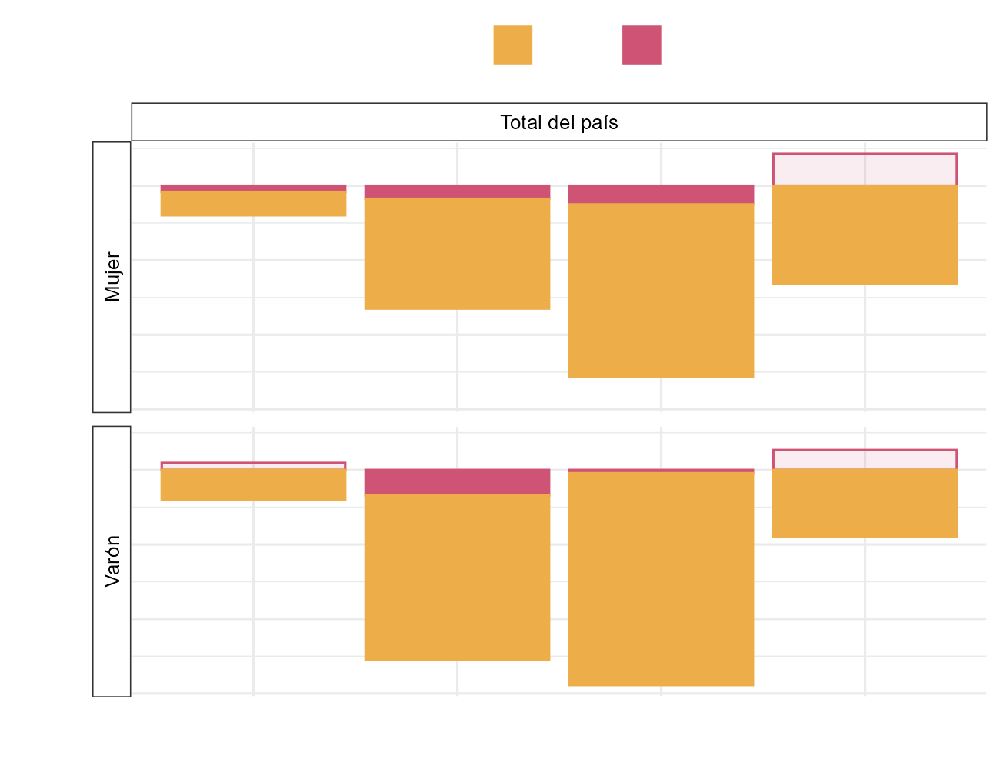
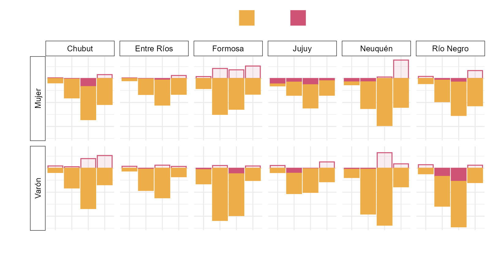

Impacto sociodemográfico de la pandemia de COVID-19 en la esperanza de vida a los 20 años a nivel nacional y provincial en Argentina
Director: Dr. Octavio Bramajo
Universidad de Luján
23 de agosto de 2024
Índice
Introducción
Objetivos
Marco conceptual
Antecedentes
Fuentes y métodos
Resultados
Conclusiones
Introducción
La pandemia causada por la enfermedad del COVID-19 es uno de los eventos más relevantes a nivel mundial en los últimos 100 años
Nuevas medidas adoptadas por los gobiernos: limitaciones al movimiento de personas, distanciamiento social, suspensión de actividades, cierre de fronteras.
La edad y el sexo son determinantes al momento de estudiar la exposición al riesgo de enfermedades y el COVID-19 no es la excepción.
Estructura por edad más rejuvenecida en los países de América Latina que en los europeos, pero con mayor prevalencia de enfermedades no trasmisibles.
Otras características sociales estructurales desfavorables hacen a la región particularmente vulnerable ante la pandemia.
El desarrollo histórico argentino genera diferencias entre las regiones: se reflejan en su estructura demográfica y en variables socioeconómicas y territoriales. Por lo tanto, las provincias están en situaciones heterogéneas al momento de la llegada del COVID-19.
Objetivos
General
- Describir y analizar los diferenciales sociodemográficos y espaciales de la mortalidad durante la pandemia por COVID-19 en la población adulta de 20 años y más en Argentina y sus provincias.
Específicos
Comparar la mortalidad observada en 2020 y 2021 con la mortalidad previa, de 2019.
Estimar el impacto del COVID-19 en la esperanza de vida a los 20 años por provincia para dos escenarios sin la mortalidad por COVID-19.
Cuantificar el impacto diferencial del COVID-19 por grupos de edad y sexo en las provincias.
Identificar el impacto de la estructura socioespacial en los cambios de la mortalidad durante la pandemia de COVID-19 entre 2019 y 2021.
Marco conceptual: transiciones demográfica y epidemiológica
- La transición demográfica argentina presenta una trayectoria “atípica” en relación a los lineamientos clásicos del modelo.
- Actualmente, Argentina se encuentra en una etapa avanzada de la transición. El porcentaje de personas de 65 años y más es de 11,8% según datos del CNPHV 2022 .
- América Latina es la región con mayor heterogeneidad en salud y mortalidad. Hay superposición de etapas, “contratransición” y estancamiento. Las desigualdades sociales exacerban las desigualdades en salud y se produce una “polarización epidemiológica”.
- Argentina tiene los primeros cambios en el perfil epidemiológico en la década de 1930. Para 1950, Argentina ha cubierto buena parte del proceso de transición epidemiológica. Sin embargo, el desarrollo de las provincias es heterogéneo y la salud y la mortalidad se encuentran distribuidas desigualmente
Marco conceptual: impacto del COVID-19 y desigualdades
- Inicialmente, se hace énfasis en la mayor mortalidad masculina del COVID-19, especialmente entre las personas mayores y aquellas con enfermedades preexistentes
- Impacto del COVID-19: hay mayor la prevalencia de enfermedades que actúan como factores de riesgo en América Latina. También la desigualdad social aparece como un factor de riesgo.
- A su vez, los factores de riesgo (obesidad, tabaquismo) son más frecuentes a menor nivel socioeconómico (NSE)
Marco conceptual: desigualdades sociales en salud (1/2)
- Los factores exógenos al nivel de ingreso de un país son responsables de las ganancias en e0 (Preston, 1975)
- Teoría de las causas fundamentales (TCF) (Link & Phelan, 1995): la posición que ocupan los individuos en la estructura social (asociada a recursos, conocimientos, etc.) los pone en riesgo de riesgos, por lo que todo factor de riesgo debe ser contextualizado. Las causas fundamentales persisten como gradientes sociales en la morbimortalidad.
- En tanto la CF estratifique la exposición a determinantes de la salud, funciona como un sistema de exposición, atributo de la población, y no del individuo (Riley, 2020)
Marco conceptual: desigualdades sociales en salud (2/2)
- Como los recursos para afectar la mortalidad están distribuidos desigualmente, mientras más rápido se aborde el tratamiento de una enfermedad, menos tiempo lleva cada etapa de la historia social de la enfermedad y más rápidamente se controlan las desigualdades (Clouston et al., 2016)
- Farmer (2000) propone una epistemología crítica de las enfermedades infecciosas emergentes que incluya evaluar factores estructurales como la pobreza y las desigualdades sociales en la pelea contra las enfermedades infecciosas
Marco conceptual: desigualdad social y territorio
- Como la vida social no transcurre en el vacío sino en un lugar y momento determinados, la estructura social se refleja en el territorio, en tanto espacio donde la vida social ocurre (Jackson, 2017).
- La dinámica en el territorio es, en parte, resultado del desarrollo geográfico histórico desigual. Por lo tanto, condensa en un momento la distribución y asignación desigual de recursos (entonces, de ventajas y desventajas) producto de esa dinámica.
- Los hábitos y las trayectorias de los grupos poblacionales que habitan el territorio inciden y son a su vez modificadas por las condiciones dadas en un momento y lugar del territorio. Por lo tanto, las desigualdades se organizan espacialmente y convergen en patrones espaciales de desigualdad en fenómenos como la salud y la mortalidad
- Estas desigualdades territoriales adquieren especial relevancia en momentos de crisis y catástrofes porque impactan más fuertemente en los sectores desfavorecidos.
Antecedentes
COVID-19: pérdida de esperanza de vida y descomposición
- Proyecciones de ex (0, 15, 65) según tendencias previas y escenarios contrafácticos sin COVID-19
- Descomposición de las diferencias de ex por edad, sexo y causas:
- mayor pérdida en los varones
- el COVID-19 explica la mayor parte de la pérdida de esperanza de vida
- poca contribución de las edades 0-19 en la pérdida de e0
- En Argentina, un primer trabajo proyecta la mortalidad según las tendencias de la década previa para 11 provincias y encuentra diferencias que se atribuyeron a desigualdades estructurales.
Diferenciales sociodemográficos en la mortalidad
- Mejores condiciones de vida se asocian a una situación más ventajosa respecto de la mortalidad en la gran mayoría de los casos:
- En Argentina, un estudio realizado para la provincia de Buenos Aires durante la pandemia de gripe A arroja resultados en ese sentido
Diferenciales sociodemográficos en la mortalidad por COVID-19
- En países desarrollados, indicadores de condiciones de vida se asocian a niveles diferentes de riesgo de contraer COVID-19.
- Estudios en la región obtienen que el impacto heterogéneo del COVID-19 se relaciona con las desigualdades preexistentes en salud. Sin embargo, no todos encuentran una mayor mortalidad a nivel territorial en lugares menos desarrollados económicamente o con peores indicadores sociales (Lozano et al., 2023).
- Para Argentina, hay estudios que relacionan el porcentaje de hogares con Necesidades Básicas Insatisfechas (NBI) y densidad poblacional con la mortalidad por COVID-19 (por ejemplo, (Leveau & Bastos, 2022)).
- Otros indicadores que han mostrado asociación con la incidencia y/o la mortalidad por COVID-19: hacinamiento, cobertura de salud, tasas de empleo y desempleo, desigualdad de ingresos, acceso al agua potable, la infraestructura hospitalaria, la densidad poblacional, entre otras
Fuentes y métodos
Fuentes de datos
EEVV 2010-2021 de la Dirección de Estadísticas e Información en Salud (DEIS).
Proyecciones de población (Instituto Nacional de Estadística y Censos, 2013)
Censos Nacionales de Población, Hogares y Viviendas 2010 y 2022 (Instituto Nacional de Estadística y Censos, 2012, 2023)
Indicadores Básicos 2021 (Ministerio de Salud de la Nación & Organización Panamericana de la Salud, 2021)
Encuesta Permanente de Hogares (EPH) total urbano 2019 (Instituto Nacional de Estadística y Censos, 2022)
Estandarización de tasas: se utiliza la población de 20 años y más del 2019 del país. \(TEM_i = \frac{\sum{_nm_x^i*_nP_x^S}}{\sum {_nP_x^S}}\)
Tablas de vida
Tablas de decrementos múltiples: \(_nq^i_x = \frac{_nd^i_x}{l_x}\)
Descomposición con el método de Horiuchi et al. (2008): \(y_2 - y_1 =\sum_{i = 1}^{n}{c_i} =\int_{x_{i1}}^{x_{i2}}{\frac{\partial y}{\partial x_{i1}}\partial x}\)
Correlación lineal entre la diferencia de e20 entre 2019-2021 e indicadores sociodemogáficos seleccionados en base a la bibliografía relevada.
Resultados: TEM
| Jurisdicción | 2020 | 2021 | ||||||||||
| Mujer | Varón | Mujer | Varón | |||||||||
| TEM proy | TEM obs | ΔP-O | TEM proy | TEM obs | ΔP-O | TEM proy | TEM obs | ΔP-O | TEM proy | TEM obs | ΔP-O | |
| Chaco | 10,2 | 10,2 | 0,0 | 16,3 | 17,4 | -1,1 | 10,1 | 13,2 | -3,1 | 16,2 | 21,2 | -5,0 |
| Tucumán | 9,3 | 10,2 | -0,9 | 14,2 | 16,4 | -2,1 | 9,3 | 11,7 | -2,4 | 14,1 | 17,8 | -3,7 |
| Santiago del Estero | 9,5 | 8,8 | 0,7 | 14,2 | 14,1 | 0,1 | 9,5 | 11,7 | -2,1 | 14,1 | 17,9 | -3,8 |
| Total del país | 8,8 | 9,4 | -0,6 | 13,6 | 15,1 | -1,5 | 8,8 | 10,8 | -2,0 | 13,4 | 17,0 | -3,6 |
| Chubut | 7,6 | 8,3 | -0,7 | 12,9 | 14,4 | -1,5 | 7,5 | 9,5 | -2,0 | 12,7 | 15,7 | -3,0 |
| Tierra del Fuego | 7,5 | 9,5 | -2,1 | 10,7 | 17,0 | -6,3 | 7,3 | 9,4 | -2,1 | 10,4 | 14,3 | -3,9 |
| CABA | 8,1 | 9,2 | -1,1 | 12,2 | 14,8 | -2,6 | 8,0 | 9,3 | -1,3 | 12,0 | 15,1 | -3,1 |
Resultados: e20 2019, 2020 y 2021
| Jurisdicción | 2019 | 2020 | 2021 | |||||||
| Mujer | Varón | Mujer | Varón | Mujer | Varón | |||||
| e20 | vs. 2019 | e20 | vs. 2019 | e20 | vs. 2019 | e20 | vs. 2019 | |||
| Chubut | 63,7 | 55,7 | 61,9 | -1,8 | 54,6 | -1,1 | 60,1 | -3,6 | 53,4 | -2,3 |
| Entre Ríos | 61,7 | 54,8 | 61,7 | 0,0 | 54,7 | -0,1 | 59,3 | -2,4 | 52,5 | -2,4 |
| Jujuy | 61,6 | 55,3 | 58,1 | -3,5 | 50,1 | -5,1 | 58,6 | -2,9 | 52,8 | -2,4 |
| Total del país | 61,1 | 55,2 | 60,3 | -0,8 | 53,9 | -1,3 | 58,3 | -2,8 | 52,0 | -3,2 |
| Río Negro | 62,2 | 56,7 | 60,1 | -2,1 | 53,9 | -2,7 | 58,8 | -3,4 | 52,1 | -4,6 |
| Neuquén | 62,8 | 56,2 | 60,7 | -2,1 | 54,0 | -2,3 | 58,9 | -3,8 | 51,6 | -4,6 |
| Formosa | 60,0 | 55,1 | 61,9 | 2,0 | 55,7 | 0,6 | 57,5 | -2,5 | 50,0 | -5,1 |
Resultados: e20 2020 y 2021 - Mujeres

- Mostrar de la tabla 6 algunos highlights (por ej las que no perdieron en 2020)
- comparación mujer 2020-2021 y varón 2020-2021 (rearmar gráfico)
Resultados: e20 2020 y 2021 - Varones

Resultados: Descomposición - Cambios en la e20 por causas
| Jurisdicción | Mujer | Varón | ||||
| COVID-19 | Otras causas | %COVID-19 | COVID-19 | Otras causas | %COVID-19 | |
| Neuquén | -4,390 | 0,549 | 114,3% | -5,350 | 0,736 | 116,0% |
| Formosa | -3,848 | 1,379 | 155,9% | -5,015 | -0,089 | 98,3% |
| Río Negro | -3,633 | 0,196 | 105,7% | -3,963 | -0,618 | 86,5% |
| Chubut | -3,423 | -0,176 | 95,1% | -3,367 | 1,086 | 147,6% |
| Total del país | -2,707 | -0,041 | 98,5% | -3,175 | -0,011 | 99,7% |
| Entre Ríos | -2,439 | 6,4% | 1,027 | -2,589 | 24,5% | 1,105 |
| Jujuy | -2,196 | -0,736 | 74,9% | -2,576 | 0,145 | 106,0% |
Resultados: Descomposición - Total del país

Resultados: Descomposición - Provincias seleccionadas

Resultados: correlaciones lineales
| Indicador | Mujeres | Varones | ||
| R2 (%) | β | R2 (%) | β | |
| Densidad de población (ln) | 41,0% | -0,25 | 12,4% | -0,15 |
| Porcentaje de hogares sin agua proveniente de red pública dentro de la vivienda (NBI 2) | 0,0% | 0,00 | 9,1% | 0,03 |
| Porcentaje de población de 25 años y más con al menos secundario completo | 1,8% | -0,01 | 5,4% | -0,02 |
| Porcentaje de hogares con más de 3 personas por cuarto de uso exclusivo del hogar (NBI 3) | 0,8% | -0,03 | 3,5% | 0,07 |
| Tasa de mortalidad infantil | 0,5% | -0,02 | 2,5% | 0,06 |
| Camas hospitalarias cada 10.000 habitantes (ln) | 5,9% | -0,70 | 2,0% | -0,45 |
| Porcentaje de hogares con Necesidades Básicas Insatisfechas (NBI) | 0,7% | -0,01 | 1,7% | 0,02 |
| Porcentaje de informalidad laboral asalariada | 0,0% | 0,00 | 0,2% | 0,00 |
| Coeficiente de Gini de la distribución del IPCF | 0,5% | -1,67 | 0,0% | 0,22 |
Conclusiones (1/x)
- La pérdida de 𝑒20 entre 2019 y 2020 para el total del país es de 0,79 y 1,28 años para mujeres y varones respectivamente. Para mostrar otros resultados en contexto, estas pérdidas son menores a las experimentadas en el mismo período en la 𝑒15 en varios países (Huang et al., 2023) y en la 𝑒0 en varios países europeos (Aburto et al., 2022). Entre 2019 y 2021, las pérdidas de años de 𝑒20 para el total del país son de 2,75 años para las mujeres y 3,19 años para varones. En este mismo período, los países europeos presentan diferencias en su 𝑒0 que oscilaron entre ganancias de 0,1 años y pérdidas de hasta 3,58 años (Schöley et al., 2022); en el caso de países de Latinoamérica, varios tienen pérdidas en la 𝑒0 por encima de 4 años: México (4 años), Bolivia (4,1 años), Paraguay (4,7 años), Guatemala (4,8 años) y Perú (5,6 años) (Heuveline, 2022).
- A nivel de las provincias, las diferencias entre 2020 y 2021. En 2021 la e20 hubiera sido similar a la observada sin COVID-19 si las tendencias de la mortalidad hubieran permanecido como en la década previa.
Conclusiones (2/x)
Causas que tendieron a evitarse: SIES

A ver este otro punto
Limitaciones
- Datos de defunciones: si bien la cobertura es buena, hay aspectos a mejorar en la calidad de la información. Si bien hay estudios de exceso de mortalidad que muestran que éste se explica por el COVID-19, es necesario hacer estudios más detallados que evalúen la calida, muy difíciles de realizar con los datos publicados.
- Asimismo, este trabajo se dedicó a diferenciar entre defunciones COVID-19 vs. no COVID-19 y, por lo tanto, no da cuenta de la incidencia de defunciones por causas relacionadas muy cercanamente al COVID y que podrían estar ocultando una pérdida mayor, como ser la diabetes miellitus y la enfermedad isquémica del corazón, tal como ocurrió en México (Gonzalez-Perez & Vega-Lopez, 2023)
- Dado el origen de los datos, resulta imposible poder evaluar el rezago de la inscripción de defunciones, por lo que las defunciones de 2021 pueden estar sobreestimadas en algunas provincias. Es importante profundizar en este aspecto solicitando estos datos a la DEIS.
- No hemos dado cuenta de las diferencias en las estrategias de cierres y aperturas en los distintos momentos a distintos niveles territoriales.
- Las desigualdades socioespaciales habitualmente suelen medirse a niveles más desagregados. Sin embargo, eso plantea la dificultad de utilizar medidas robustas como la esperanza de vida debido a los datos disponibles y la dificultad de proyectar a niveles pequeños de desagregación (especialmente tan lejos de las últimas proyecciones).
- Este trabajo no capta el efecto de la vacunación a lo largo de 2021. De ello se desprenden posibles líneas de investigación para profundizar en el conocimiento, tanto del desarrollo de la pandemia como del efecto de la vacunación en la mortalidad.